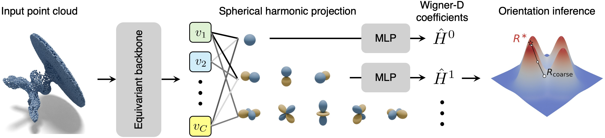
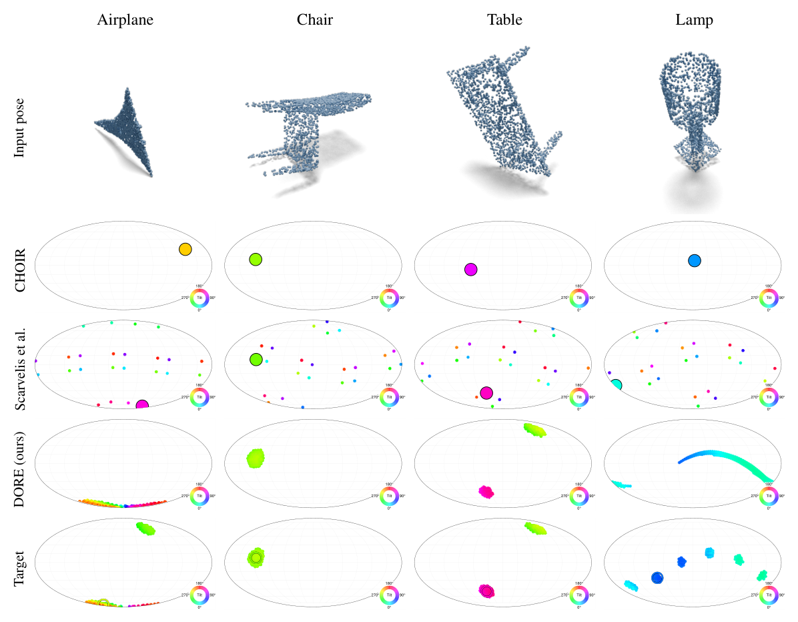

Abstract
The canonical orientation of a 3D object is often not unique, yet inherently ambiguous – symmetric objects, for instance, admit multiple equally valid canonical frames that no single-output regressor can faithfully represent. Existing methods struggle to handle this ambiguity: they either predict a single orientation, enforce symmetry only under pre-defined group assumptions, or rely on costly test-time augmentation to make their predictions robust. We propose a distributional approach that models 3D object orientation as a distribution over SO(3), accommodating both finite and continuous groups without any group-specific architectural bias. To this end, we develop an SO(3)-equivariant framework in which a truncated Wigner-D expansion encodes multiple valid orientations as a continuous, multi-modal distribution. On the ShapeNet benchmark, our method surpasses the prior state of the art across all categories under single-pass inference. Furthermore, even without test-time rotation augmentation, it matches the accuracy of a 50-vote ensemble baseline to within 0.5 percentage points at roughly 12× lower latency, demonstrating that explicit distributional modeling is both accurate and efficient.
Method

Qualitative results

BibTeX
The citation will be added when the paper is published.